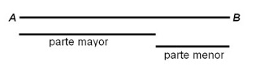

Resumen
En este capitulo se habla de cómo con la matemática se podía calcular la belleza de una mujer, ya que Hassan quería casarse con una bella joven pero tenia miedo de que ella no tuviera , entonces quiso recurrir a la ciencia de la matemática para calcular la belleza de esta dama gracias a la geometría podían calcular si era hermosa o fea por sus formas perfectas ya con esto era innecesario para el novio ya que con una media docena de medidas y una aplicación de ellas en las formulas matemáticas de belleza pero para poder calcular estas medidas las tomaron al interior del ¨harem¨ por una ¨catbet¨asi con esta ayuda las medidas fueron entregadas al pretendiente así calculando la belleza de la joven y llegaron a la conclusión de que la hija del mercader ABul –Lahabe la joven Zarai era tan bella como la décima tercera Hurí del cielo de Alah.
Pero gracias al algebra se podía llegar a este resultado y se podía calcular de un modo simple
Dada cierta magnitud AB (representada en este caso por un segmento de recta), podemos dividirla al medio, o en dos partes desiguales. La división en dos partes desiguales puede ser hecha, es claro, de una infinidad de maneras diferentes.

Para así dividir la forma simpática en 2 formas iguales Esa división corresponde a la forma simpática que pueden presentar las dos partes desiguales. Podemos formular la siguiente regla: “Para que un todo dividido en dos partes desiguales parezca hermoso desde el punto de vista de la forma, debe presentar entre la parte menor y la mayor la misma relación que entre ésta y el todo.”
Este es el rostro matemáticamente hermoso ya que la linea C de los ojos divide la linea total de AB en medida y extrema razon.despues con el tiempo algunos matemáticos se dieron cuenta de la expresión que existía gracias a los romanos la cual era la la divina proporcion¨ ya que en cualquier obra esta se divide en general, la medida total del libro en media y extrema razón.


Esta definición es observada y admirada en las fachadas de los edificios que se distinguen por tener una perfección total así con esta herramienta se puede calcular la perfección de lo bello de un objeto obra o pintura o persona.
.png)
.png)